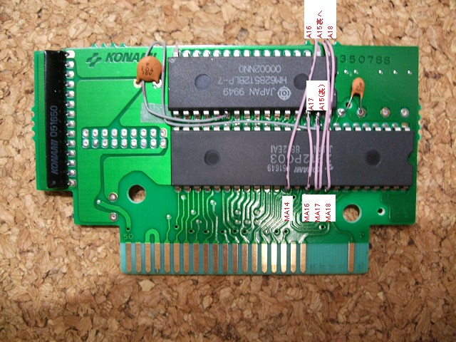
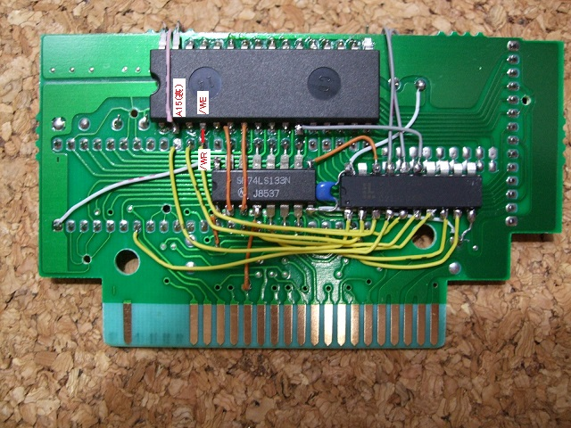

12．628512の配線
628512の残りの配線をしてしまいます。


2212P003の36,38,39,40ピン(MA14,MA16,MA17,MA18)を628512の2,30,31,1ピン(A16,A17,A15,A18)と接続します。
A16,A18は基板の外側で628512の足同士(1ピン同士、2ピン同士)がくっつくようになっていると思いますので、
まとめてはんだ付けします。A15は表面の628512と裏面の628512それぞれにつなげなくてはなりません。
2212P003の最後にSRAMの12ピン(/WR)と628512の29ピン(/WE)を接続します。
 次へ
次へ